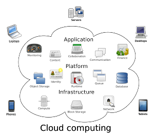
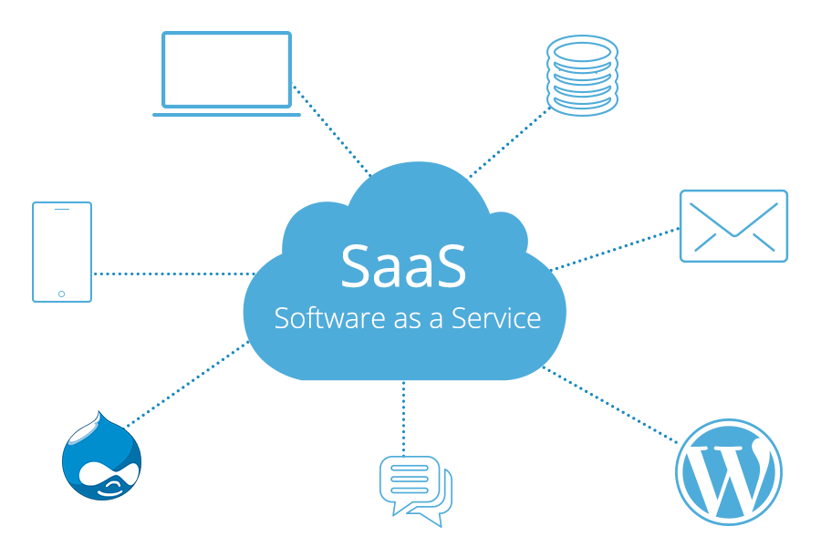

LE CLOUD COMPUTING

Définition
Le Cloud Computing désigne le stockage et l’accès aux données par l’intermédiaire d’internet plutôt que via le disque dur d’un ordinateur. Il s’oppose ainsi à la notion de stockage local
En d ‘autre terme le Cloud Computing est la fourniture de services informatiques via internet pour une meilleure flexibilité
Historique
Le développement du Cloud est en corrélation avec celui d’internet (Internet étant schématisé par un nuage par le passé.). Dans ce contexte, le développement d’internet et de services internet (web 2.0, hébergement, CRM) ont permis d’aboutir à la notion de cloud computing.)
Types et services Cloud
Types de cloud
On distingue 3 types de Cloud computing qui sont :
- Le Cloud Public: Dans la notion de public cloud, un fournisseur tiers propose des services cloud (stockage, logiciels, infrastructures).
- Le Cloud Privé : Le cloud est utilisé de façon exclusive par une entreprise ou une organisation
- Le Cloud hybride : Le cloud hybride reprend les deux premiers types. Il permet aux données de transiter entre un public et un privé
Services cloud computing
Le cloud computing offre 3 principaux
services, Saas, Paas et Laas.

- Saas (logiciel en tant que service): Dans le service Saas un logiciel est exploité en ligne de façon gratuite ou moyennant un abonnement. Comme technologie Saas populaire, on peut citer Office 365, Google G Suite, Adobe creative cloud.
- Paas (Plateforme en tant que service): Dans le système Paas, un fournisseur cloud donne accès à une plateforme d’exécution d’applications à un développeur ou une entrepise.
Exemple de service Paas : Microsoft Azure, Google App Engine .
- Iaas (Infrastructure as a service): Dans ce service, une entreprise exploite une infrastructure informatique sur un cloud moyennant un abonnement chez un fournisseur tiers. A titre d’exemple Iass on a l’Hébergement, les applications et le stockage web.
Ainsi le Cloud computing offre plusieurs possibilités et présente bien d’avantages ( Prix réduits, vitesse, sécurité…). Son utilisation est de plus en plus rependu et les techonogies encore plus performantes.
Avantages et inconvenients
Comme toute technologies, le cloud computing disposent d'énormement d'avantages, mais aussi d'inconvénients.
Les avantages
- Une réduction des coûts: Plus d'infrastructure IT en interne, pas de coût de maintenance et de changement de matériel sont des avantages indéniables dans la mise en place d'une infrastructure Cloud. L'entreprise paye uniquement l'utilisation et la consommation des ressources selon ses besoins, pouvant les réduire ou les augmenter en seulement quelques clics.
- Un usage simplifié: L’utilisateur n’a pas d’infrastructure à gérer, c’est au fournisseur Cloud de maintenir le matériel serveur, le stockage et les réseaux. La machine est livrée à jour et prête à l'emploi.
- Une haute disponibilité du service: Le Cloud Computing permet de garantir les accès et la disponibilité des services entre 98 et 99.99%, comprenant maintenance des serveurs ou panne.
- La sécurité: Un service de Cloud Computing propose des services de sécurité important pour un prix moindre qu'avec une infrastructure physique dans l'entreprise.
Les inconvenients
- Le client d'un service de cloud computing devient très dépendant de la qualité du réseau pour accéder à ce service. Aucun fournisseur de service cloud ne peut garantir une disponibilité de 100 %
- Les entreprises n'ont plus de garanties (autres que contractuelles) de l'utilisation qui est faite de leurs données, puisqu'elles les confient à des tiers.
- En ce qui concerne le Cloud Public, des cyber-attaques peuvent avoir lieu du fait du côté "accès pour tous" de ce type de Cloud.
- Une fois son infrastructure sur un cloud, il est très difficile d'en sortir, et cela nécessite un budget important (pour les grosses entreprises disposant d'une infrastructure complexe)
Ainsi, on peut donc voir que les principaux inconvénients rencontrés, juridique et surtout de dépendance au réseau, par le Cloud Computing sont largement dépassés par le nombre conséquent d'avantages, financier et usager.